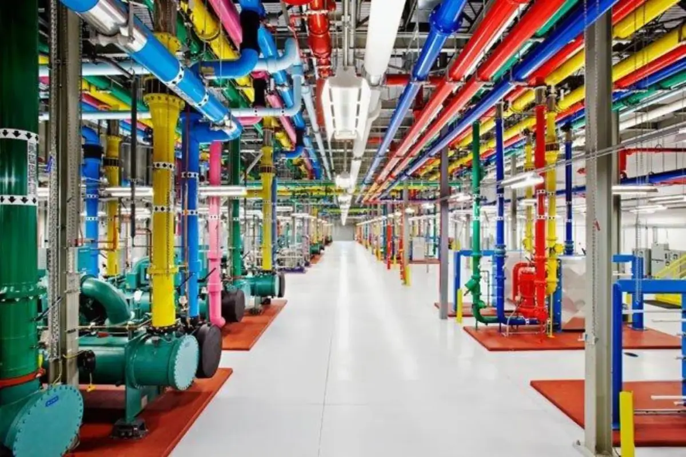

Localisation des serveurs
Le carbone et l'eau dépendent de l'endroit où tournent les machines.
Le même kWh ne pèse pas le même carbone
C'est l'électricité du pays d'hébergement qui compte, pas celle des utilisateurs.
France
41 g
de CO₂ par kWh produit, en 2024.
États-Unis
384 g
de CO₂ par kWh produit, en 2024. Neuf fois plus.
Ember, Global Electricity Review, 2025, même méthode pour les deux pays. RTE publie 20 g pour la France en comptant les seules émissions directes de production ; l'écart avec Ember vient du bois-énergie.
Des serveurs surtout américains
Les principaux éditeurs de modèles sont des entreprises américaines. Leurs centres de données se concentrent donc sur le territoire américain.
À modèle égal et à réponse égale, le carbone dépend de la prise de courant.

La France a un atout
Son mix électrique est largement décarboné, porté par le nucléaire.
Un serveur qui tourne en France émet donc peu, à calcul égal.
Mais la place sur le réseau n'est pas illimitée : les raccordements de centres de données entrent en concurrence avec l'électrification des transports et de l'industrie.
RTE a mis en consultation la refonte des règles de raccordement, citée par l'Arcep, mai 2026.
Le Chili : l'eau, pas le carbone
Le pays traverse une sécheresse longue de plus de dix ans.
Un mètre cube prélevé là-bas ne pèse pas le même poids qu'un mètre cube prélevé en Bretagne. C'est le contexte local qui fait la gravité, pas le volume seul.
Des projets de centres de données y ont été contestés, comme aux Pays-Bas. Aucun opérateur ne publie de volume vérifiable site par site.
Juger à l'échelle locale
Une même machine ne pèse pas pareil selon l'endroit où on la pose.
Électricité
Le carbone suit le mix du pays qui héberge les serveurs.
Eau
Le refroidissement pèse d'autant plus lourd que la région en manque.
Règles
Les géants s'installent là où les infrastructures sont fiables et la réglementation accueillante.
Ce que l'écran ne mesure pas
compar:IA calcule sur le mix électrique mondial moyen, jamais sur celui du pays d'hébergement. Le bilan affiche donc une énergie, pas des émissions.
Il faudrait savoir où chaque fournisseur fait tourner ses serveurs. Presque aucun ne le publie site par site. Le débat reste donc entier.